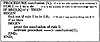
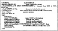

by Abraham Kandel
CRC Press, CRC Press LLC
ISBN: 084934297x Pub Date: 11/01/91
|
|
Fuzzy Expert Systems
by Abraham Kandel CRC Press, CRC Press LLC ISBN: 084934297x Pub Date: 11/01/91 |
| Previous | Table of Contents | Next |
The matching process is performed as follows. If the key word A in the conclusion of rule i or its synonym is the same as the key word A in the clause of the premise in rule j or its synonym, then we say that the A part is matched successfully. The same matching process is conducted for the key words B and C. If C is a number or a range of numbers, then we perform the evaluation of C in the conclusion of rule i and in the clause of the premise in rule j and perform the matching as will be described later. If all three key words do match, then we assume that conclusion i may contribute to the firing of rule j. When the bit matrix is created, a final check is performed:
If BM[j,i] = 1 then flag an error
If the conclusion of rule i may fire rule j and the conclusion of rule j may fire rule i, then we have identity and we do not need this rule. Consider the following two rules:
IF a THEN b
IF b THEN a
In this case the reasoning path will be
b because of a (rule 2)
a because of b (rule 1)
b because of a (rule 2)
a because of b (rule 1)
As can be seen, we have an infinite loop.

Figure 10 The QAP algorithm.
Another problem that can be created is that since each line will contain the value 1 (BM[1,2] = BM[2,1] = 1), the expert system will not be able to reach a conclusion. It will fire both rules but will terminate the inference process unsuccessfully because there is not at least one concluding rule in the knowledge base.
A question-answer program (QAP) is used to retrieve the chain of firings in the inference procedure and display all rules and data that were involved in the firing of that rule. The user may invoke the program by typing:
explain rule s
where s is the desired rule. First the QAP checks to ensure that rule s is in the list of fired rules (LR). If the rule was not found in the LR then the program is terminated (after an error message is displayed to the user). If the rule number is found in LR, the process continues.
The QAP uses the bit matrix (BM) to retrieve rules and data. As was shown in Equation 2:
BM[i,j] = 1
means that rule i may contribute to the firing of rule j. But it also means that rule j can be fired from rule i. Using this logic, we can derive a general recursive algorithm for retrieving the rules and data which were involved in the firing of the rule in question. The algorithm is presented in a Pascal-like language in Figure 10. If column k in BM consists of only zeros then, necessarily, conclusion k came from user-supplied data.
Since this procedure is activated recursively, it is guaranteed to find all the rules and data which were involved in the firing of rule k.
One of the major issues in constructing cooperative expert systems is the communication between the expert systems and within the expert system. Requests and replies must arrive to the right expert system, they must be understood, and it is desirable for them to be simple and short. In COMEX the communication is performed via a shared memory area.
Since COMEX uses a communication protocol to communicate between MMI and the CONTROLLER to pass data and knowledge, it can be treated as a local network of processes. To reduce the complexity in the design, most networks are organized as a series of layers, each one built upon its predecessor. The number of layers and the functions of each layer may differ from network to network. However, in all networks, the purpose of each layer is to offer certain services to the higher layers, shielding those layers from the details of how the offered services are actually implemented.
The communication process in COMEX belongs to the “data link” layer of the ISO-OSI model, with three sublayers:
First sublayer — This consists of three key words:
Thus the first sublayer looks like:
A MMI CONTROLLER
which means a reply from MMI to CONTROLLER.
Second sublayer — This contains the code number for the request. In other words, there are several code numbers which are understood by both the sender and the receiver. This code number must be unique for both expert systems. For example, if the user wants to see a rule, then he asks MMI to print a rule. This request is made in a natural language. MMI interprets the request and sends the request to CONTROLLER in the following way:
Third sublayer — This consists of the appropriate data, which are associated with the code number just described. Each code number must be followed by the appropriate data. If, for example, a user wants to print a rule, then he will enter the request in the following way:
print rule 6
MMI interprets the request and sends it to CONTROLLER in the following way:
| R MMI CONTROLLER |
| 3 |
| 6 |
which is interpreted by CONTROLLER as “Print rule #6”.
In order to avoid deadlock and interference problems, it was necessary to build a semaphore. A semaphore is a data structure which is designed to block a common memory from being accessed by more than one processor simultaneously. Before each request or reply, the communication file is blocked and the request is processed. After the completion of the communication process, the communication file is unblocked. Let LOCKFN be the procedure that locks the communication file (called COMFILE) and let UNLOCKFN be the procedure that frees COMFILE. The communication will be performed as presented in Figure 11.

Figure 11 Example of communication between two expert systems.
| Previous | Table of Contents | Next |
){kind=link}
){kind=link}